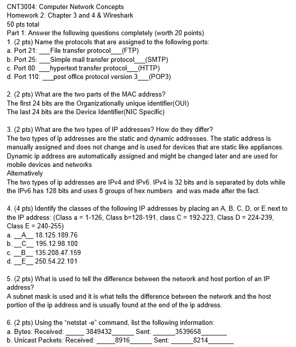

This was a assignment i worked on in my computer networks class which was a simple usage and recording of wireshark aswell as answeing questions related to mac address ip address and other related details.
what i learned from this specific project was where i could identify key details regarding internet services and components including digitial and phyiscal information aswell as it allowed me to use an application of wireshark which could prove useful in future endeavors.